Missing Links
Climate-resilient regeneration of the former Dalum Paper Factory, reconnecting the industrial site with Odense Å through wetlands, green infrastructure, and mixed urban living.
Odense, Denmark
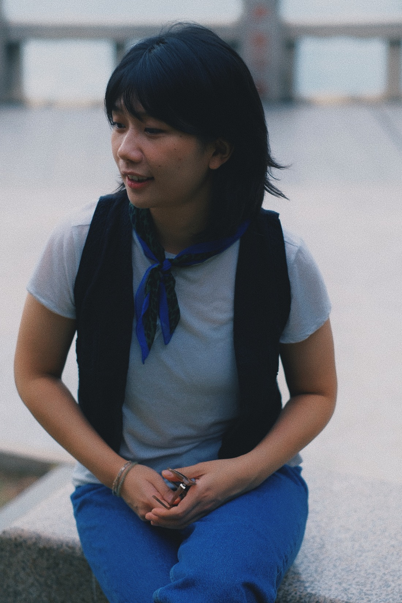
I am PhD student at the Hong Kong University of Science and Technology, with a research focus on Urban HCI. You can contact me at jliangbh@ust.hk
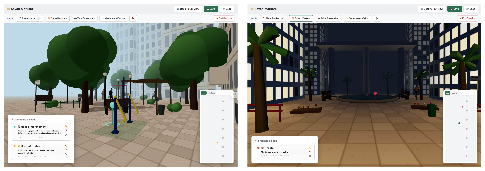
01 02
02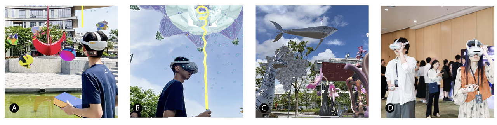
03 04
04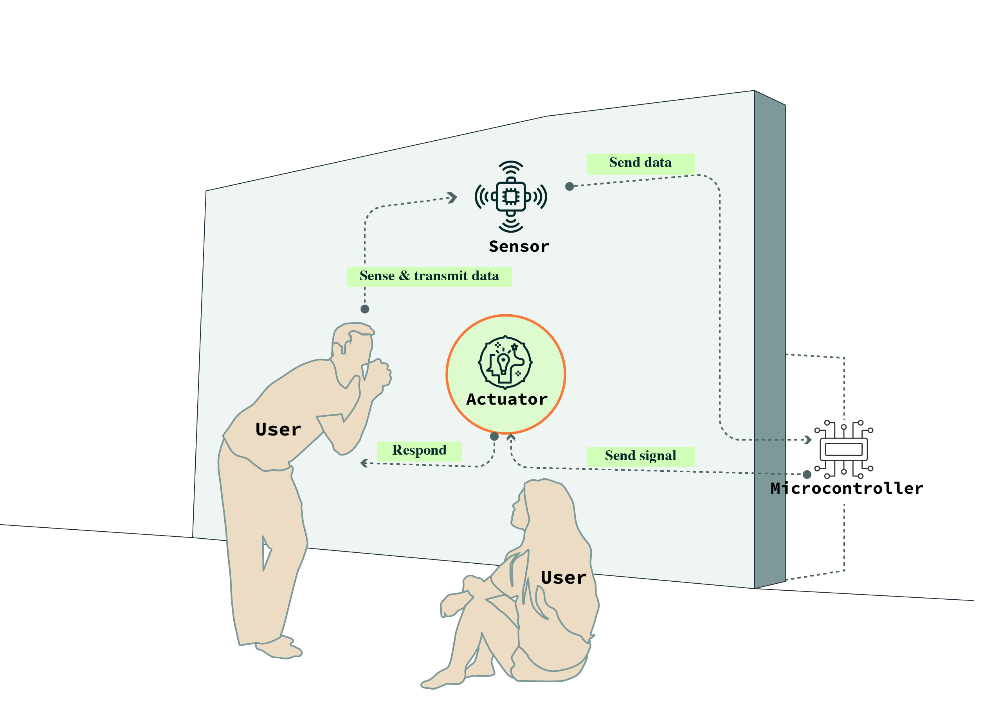
05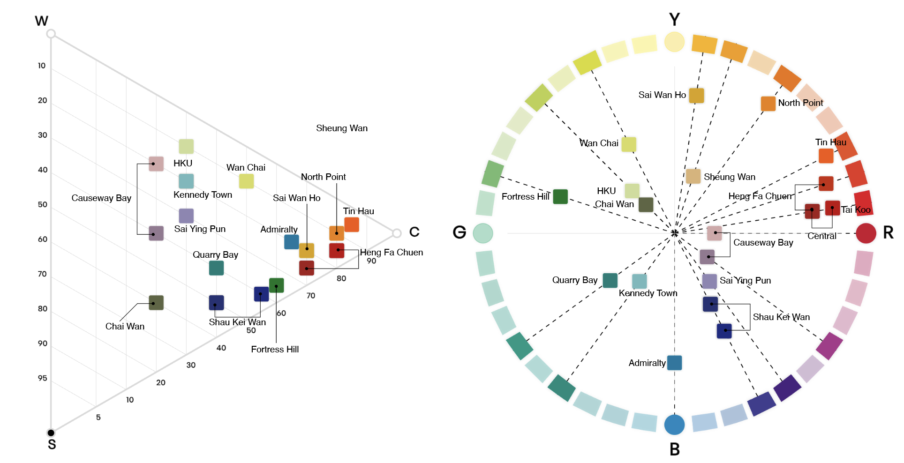
06


Proceedings of the ACM on Interactive, Mobile, Wearable and Ubiquitous Technologies
HCI in Games · Lecture Notes in Computer Science
15th Congress of the International Colour Association
I treat the feelings and stories I encounter in everyday life as starting points for research. Take walking in the city, the focus of my work: seen through the eyes of a designer, an urban observer, or a philosopher, the same walk becomes an entirely different act. I want to uncover how these perspectives reshape the way we understand everyday life.
Through the lens of HCI, I look at how technology enters and reshapes daily routines. In my design projects I draw on diverse methods, including sketching, collage, formative user interviews, and prototyping. I believe the boundaries of design are the boundaries of thinking, and that research is the bridge between lived reality and design ideation. This is why most of my research is project‑based.

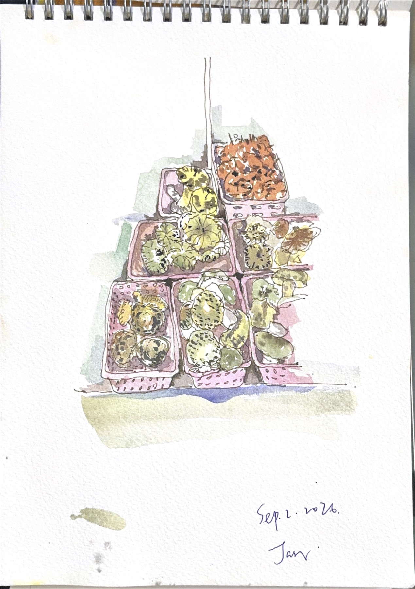
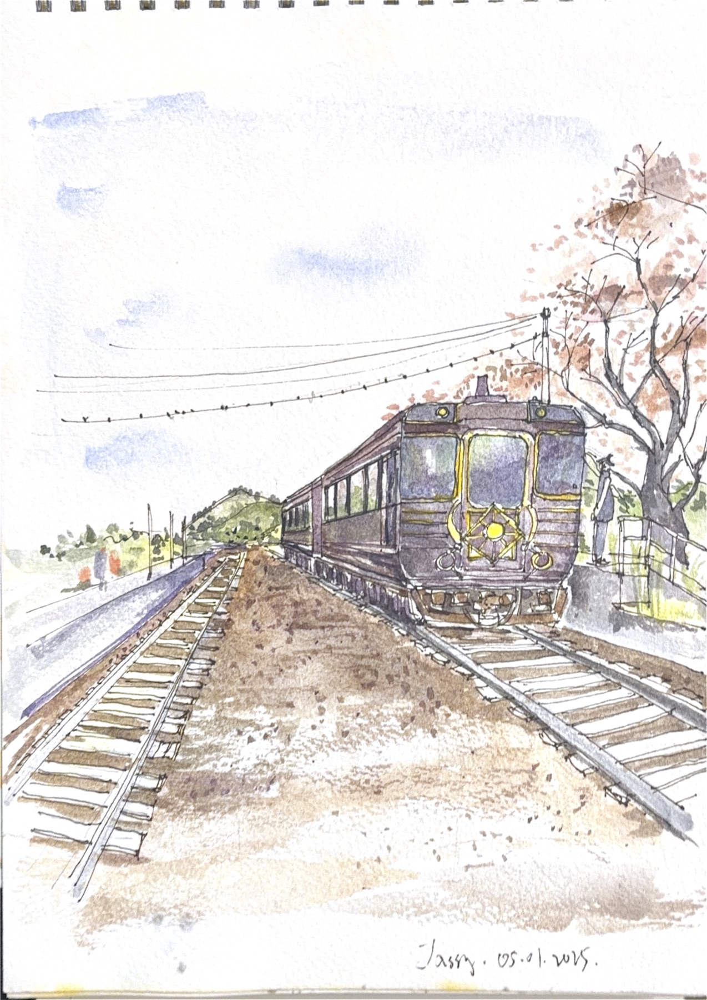
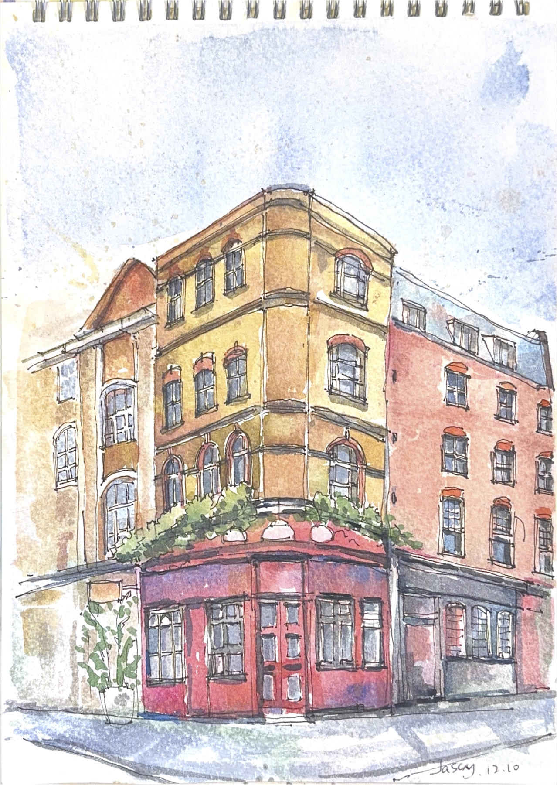
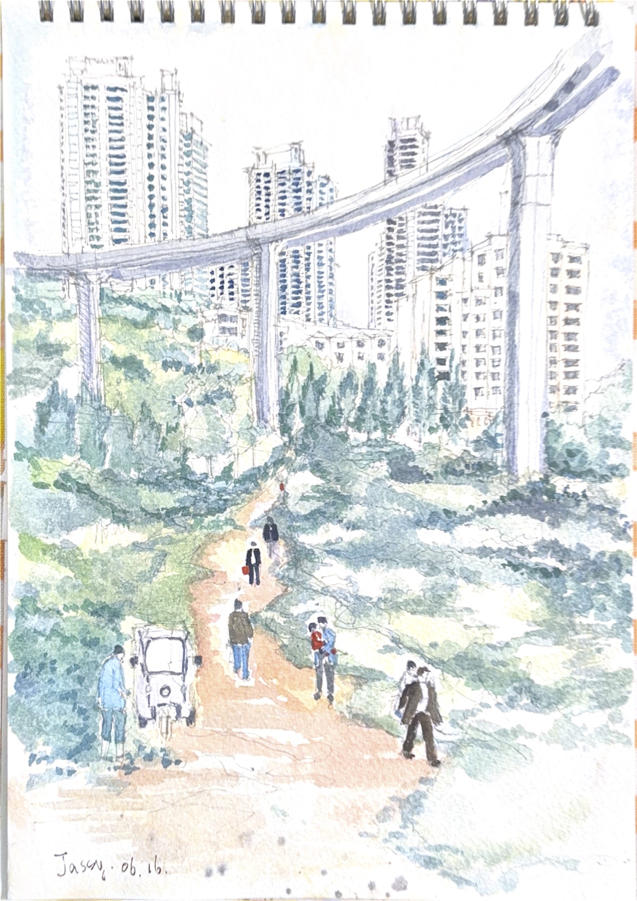
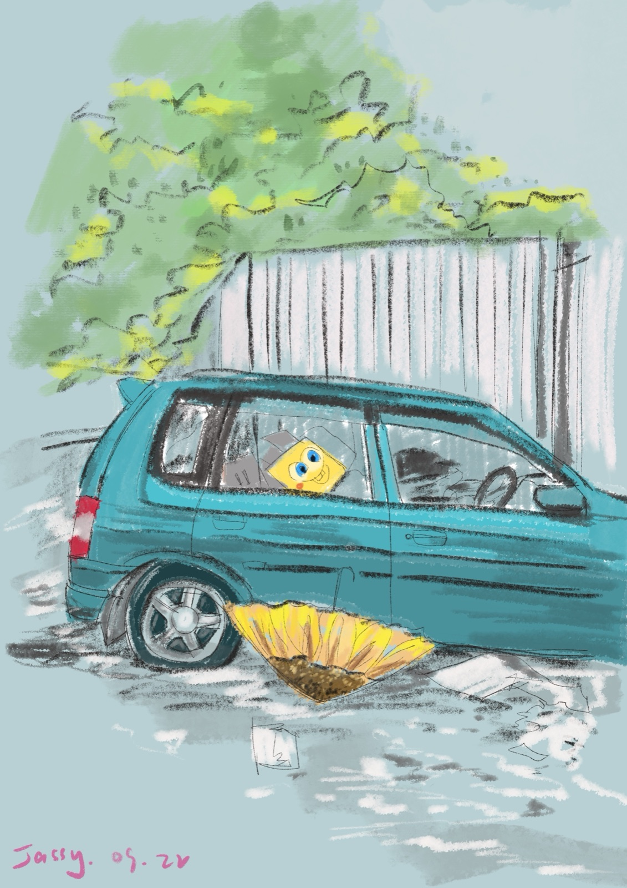
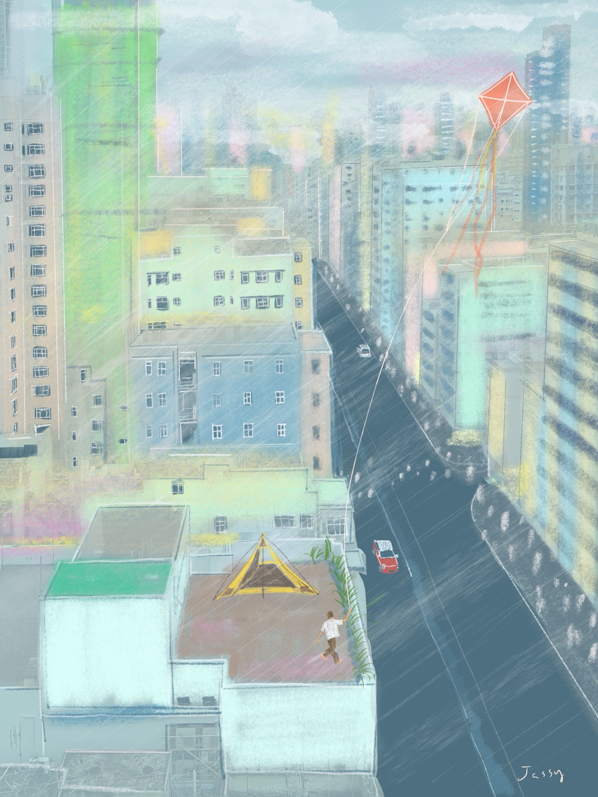
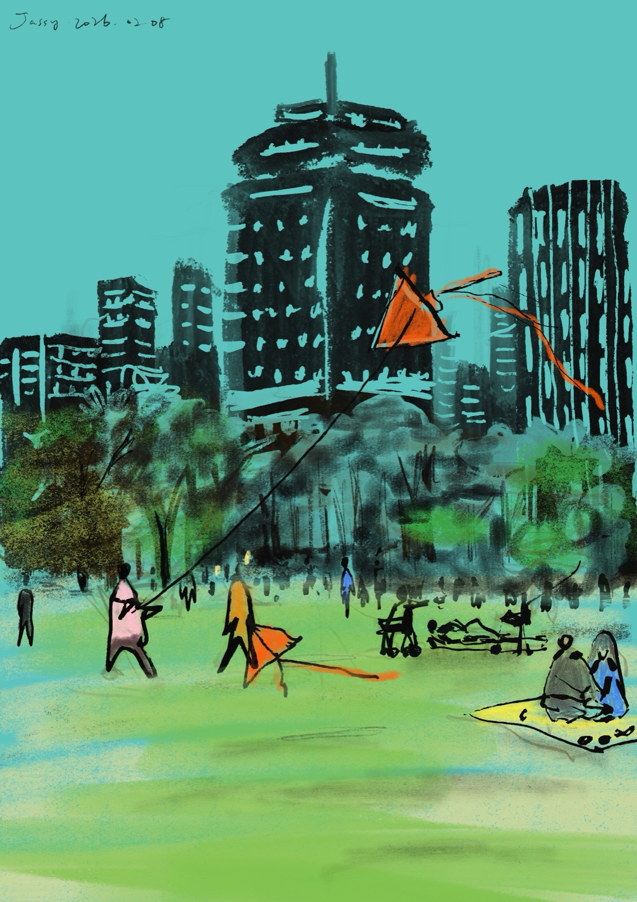